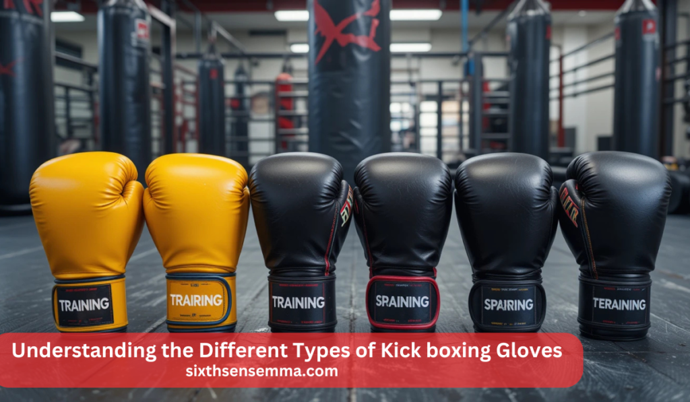
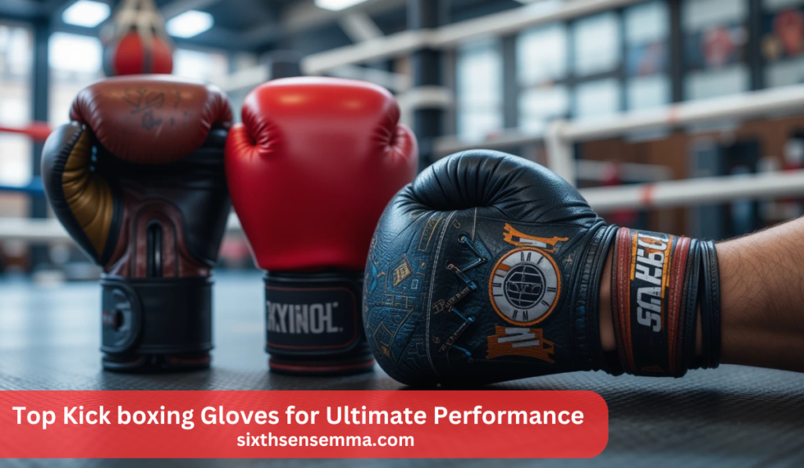
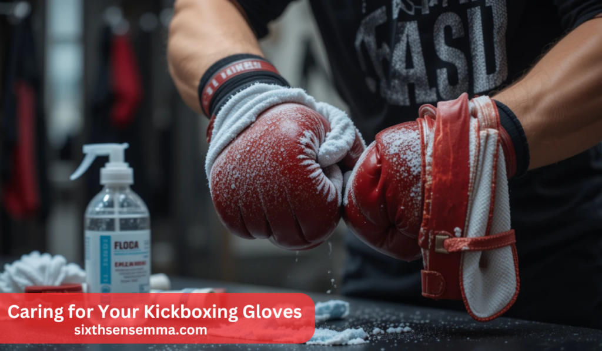

The Best Kick boxing Gloves for Ultimate Performance

Kick Boxing Gloves play a crucial role in ensuring safety, comfort, and performance during training, sparring, and competitions. Whether you’re a beginner or a professional fighter, selecting the right pair of gloves is essential for protecting your hands, improving striking techniques, and preventing injuries. Different types of gloves cater to various training needs, from general workouts to intense sparring sessions and official matches. Understanding these variations helps athletes make informed decisions based on their skill level and training requirements.
When choosing kick boxing gloves, factors like size, weight, material, closure type, and padding significantly impact their effectiveness. High-quality gloves from reputable brands offer durability and ergonomic support, enhancing overall performance. Proper maintenance and storage also extend the lifespan of gloves, ensuring hygiene and long-lasting usability. By exploring different types and features, fighters can optimize their training experience and achieve the best results in the sport.
Why are kickboxing gloves important?
Kick boxing gloves provide essential protection for the hands and wrists, reducing the risk of injuries during strikes and defensive movements. They also enhance performance by offering comfort, wrist support, and durability, making them a crucial piece of equipment for training and competition.

Understanding the Different Types of Kick boxing Gloves
Kickboxing gloves come in various styles, each designed for a specific purpose. Training gloves are versatile and used for general workouts, such as bag work and mitt drills. Sparring gloves have extra padding to minimize injury risks while practicing with a partner. Competition gloves are lighter and structured for official matches, offering better speed and impact delivery. Knowing the differences between these gloves helps in choosing the right pair based on training intensity and goals.
Factors to Consider When Choosing Kick boxing Gloves
Several factors influence the effectiveness and comfort of kickboxing gloves. Size and weight play a crucial role, as heavier gloves provide better protection, while lighter ones enhance speed and precision. Material choice impacts durability and feel, with genuine leather gloves lasting longer and offering superior comfort compared to synthetic leather alternatives. Closure type also matters—Velcro straps provide convenience, while lace-up gloves offer a more secure fit, preferred by professionals for wrist stability. Considering these factors ensures the best fit for training and competition needs.
Top Kickboxing Gloves from Reputable Brands
Leading brands manufacture gloves tailored for various training needs, ensuring durability, comfort, and performance. Century Kickboxing Gloves are known for their durability and suitability for different training levels. Yokkao Boxing Gloves offer premium materials and designs, making them popular among professionals. Hayabusa Kickboxing Gloves focus on ergonomic fit and wrist protection, ideal for intense training sessions. Sanabul Women’s Boxing Gloves are designed specifically for women, providing a secure and comfortable fit with stylish designs. Exploring these options helps in making an informed decision when purchasing gloves.
Types of Kick boxing Gloves
Kickboxing gloves come in different types, each designed for specific training and competition purposes. Choosing the right gloves depends on the intended use, whether for general training, sparring, or official matches.
Also read our article: The Best Kick boxing Gloves for Ultimate Performance
Training Gloves
Training gloves are a versatile option suitable for heavy bag workouts, pad drills, and general fitness training. They offer a balance between protection and impact feedback, helping fighters refine their techniques. These gloves typically weigh between 12 oz and 16 oz, making them slightly heavier to improve endurance and strength over time. Many training gloves feature multi-layered foam padding to absorb shocks effectively while reducing the risk of hand injuries. Additionally, proper wrist support is a key feature to prevent strain, especially during high-intensity sessions.
Sparring Gloves
Sparring gloves are specifically designed to ensure safety during practice fights with a partner. These gloves contain extra padding to minimize injuries for both the wearer and their opponent. The increased cushioning helps absorb impact, protecting the hands and facial areas from excessive force. Most sparring gloves weigh 14 oz or more, allowing fighters to develop their striking techniques while maintaining control. A secure wrist fit is crucial in these gloves to prevent hyperextension and injuries during repeated exchanges.
Competition Gloves
Competition gloves are crafted for official matches and adhere to specific weight and padding regulations set by kickboxing organizations. These gloves are lighter, usually between 8 oz and 10 oz, allowing fighters to maintain faster hand speed and deliver precise strikes. The reduced padding enhances the impact of punches, making them suitable for competitive fights where power and accuracy are essential. Depending on the competition rules, the glove weight may vary based on the fighter’s weight class. High-quality leather materials and reinforced stitching are commonly used to ensure durability during intense bouts.
| Type of Gloves | Purpose | Weight Range | Key Features |
|---|---|---|---|
| Training Gloves | General training, heavy bag, pad drills | 12 oz – 16 oz | Balanced padding, multi-layered foam, wrist support |
| Sparring Gloves | Partner training, practice fights | 14 oz or more | Extra padding, impact absorption, injury prevention |
| Competition Gloves | Official matches, professional fights | 8 oz – 10 oz | Lightweight, enhanced speed, regulated padding |
Factors to Consider When Choosing Kick boxing Gloves
Selecting the right Kick boxing Gloves requires careful evaluation of key aspects to ensure safety, comfort, and performance. The choice depends on training intensity, hand protection needs, and personal preferences.
Size and Weight
The weight of Kick boxing Gloves plays a crucial role in performance and protection.
| Glove Weight | Purpose | Key Features |
|---|---|---|
| 8 oz | Speed & agility training | Lightweight, enhances hand speed |
| 10 oz | General training & heavy bag workouts | Balanced weight, suitable for power and endurance |
| 12 oz | Pad work & light sparring | Mix of speed and protection, moderate padding |
| 14 oz | Moderate sparring | Extra padding for hand and opponent safety |
| 16 oz | Intense sparring sessions | Maximum protection, heavy padding for safety |
Material
The material of the gloves significantly impacts their durability, comfort, and maintenance. Genuine leather gloves offer superior longevity and mold to the hand over time, providing enhanced comfort. However, they require regular maintenance to preserve their quality. On the other hand, synthetic leather gloves are more affordable and easier to maintain, making them a practical choice for beginners. While they may not match the durability of genuine leather, modern synthetic options provide reliable protection and performance for various training levels.
Fit and Comfort
A well-fitted glove enhances performance and reduces injury risks. The fit should be snug but not restrictive, allowing proper hand positioning during training. Wrist support is essential to stabilize the wrist and prevent strains or hyperextension, while internal padding with high-density foam or gel enhances shock absorption, protecting the knuckles and wrists from impact injuries. Choosing gloves with a secure yet comfortable fit is key to effective and injury-free training sessions.
Closure Type
The closure system determines the glove’s convenience and security. Velcro closure gloves are popular for their ease of use, allowing quick adjustments during training sessions. They are ideal for athletes who frequently take their gloves on and off. In contrast, lace-up gloves provide a more secure and customized fit, making them a preferred choice for competitions and extended training sessions. While lace-up gloves offer enhanced wrist stability, they require assistance to fasten properly, making them less convenient for quick workouts.
Top Kick boxing Gloves for Ultimate Performance

Selecting high-quality kick boxing gloves is crucial for both safety and performance. Several reputable brands offer gloves with distinct features, ensuring comfort, durability, and protection. Below are some of the top options available for kick boxers at various skill levels.
Century Kick boxing Gloves
Century kick boxing gloves are designed to meet the needs of both beginners and experienced fighters. These gloves feature durable construction, ensuring longevity even with intense use. The wrist support is reinforced, providing stability to reduce the risk of injury. One of the key benefits of these gloves is their versatility; they are ideal for different training routines, including heavy bag work, mitt training, and sparring. Available in multiple sizes and weights, Century gloves accommodate various user preferences, making them a reliable choice for all practitioners.
Hayabusa Kick boxing Gloves
Hayabusa gloves are designed with ergonomics in mind, ensuring a natural hand curvature that minimizes strain during prolonged training sessions. These gloves incorporate advanced foam technology, which enhances shock absorption and protects the hands from impact injuries.The main focus of Hayabusa gloves is to provide superior protection while maintaining high levels of comfort. Whether used for training or competition, these gloves offer excellent wrist stability and padding, making them suitable for athletes who prioritize safety and performance.
Sanabul Women’s Boxing Gloves
Sanabul has developed boxing gloves specifically tailored for women, ensuring a snug and comfortable fit. Unlike generic gloves, these are designed to accommodate the natural shape of women’s hands, providing better control and support.These gloves are available in various unique color options, including Coral, Mint, Lavender, and Ice Blue, catering to different aesthetic preferences. They are constructed with performance-engineered synthetic leather and feature gel padding for enhanced shock absorption. Additionally, the breathable mesh palm ensures proper ventilation, keeping hands cool during intense workouts.
Top Kickboxing Gloves
| Brand | Model | Material | Padding | Key Features | Best For |
|---|---|---|---|---|---|
| Century | Standard Kickboxing Gloves | Synthetic Leather | Multi-layer foam | Durable, versatile, strong wrist support | Beginners & Advanced |
| Yokkao | Matrix Boxing Gloves | Genuine Leather | Triple-layer foam | High durability, good shock absorption | Training & Sparring |
| Yokkao | Vertigo Boxing Gloves | Genuine Leather | High-density foam | Stylish design, enhanced wrist support | High-Intensity Training |
| Hayabusa | Kickboxing Gloves | Synthetic Leather | Advanced foam | Ergonomic fit, excellent wrist stability | Rigorous Training |
| Sanabul | Women’s Boxing Gloves | Synthetic Leather | Gel padding | Designed for women, breathable mesh palm | Women’s Training |
This comparison table provides a quick overview of the best kickboxing gloves available, helping users select the most suitable option based on their specific needs and preferences.
Caring for Your Kickboxing Gloves

Maintaining kickboxing gloves properly ensures longevity, hygiene, and consistent performance. Sweat and bacteria buildup can lead to odor, material deterioration, and discomfort during training. Regular cleaning and proper storage help preserve glove quality.
Cleaning
Regular cleaning prevents bacteria growth and unpleasant odors. After each training session, wiping the exterior of the gloves with a damp cloth removes sweat and dirt. Allowing the gloves to air dry completely before storage prevents moisture buildup, which can lead to mold and bacterial growth. Excessive exposure to water should be avoided, especially for genuine leather gloves, as it can weaken the material. Instead of soaking gloves, using a mild disinfectant spray or a vinegar and water solution helps kill bacteria and eliminate odors from the glove interior.
Storage
Proper storage plays a key role in maintaining glove durability. Keeping gloves in a cool, dry place away from direct sunlight prevents material degradation and cracking. To maintain freshness, inserting glove deodorizers or silica gel packets inside the gloves absorbs moisture and prevents bad odors. Storing gloves in confined spaces, such as gym bags, for extended periods should be avoided, as this traps moisture and accelerates bacterial growth, leading to unpleasant smells and faster wear and tear.
Quick Maintenance Guide
| Maintenance Step | Description |
|---|---|
| Wiping Gloves | Use a damp cloth to remove sweat and dirt after every session. |
| Disinfecting | Apply a mild disinfectant spray or a vinegar-water solution inside the gloves to kill bacteria. |
| Air Drying | Keep gloves in a well-ventilated area after use to prevent moisture buildup. |
| Avoiding Moisture | Do not soak gloves in water; excessive moisture weakens materials, especially leather. |
| Proper Storage | Store gloves in a cool, dry place away from direct sunlight to prevent cracking and wear. |
| Using Deodorizers | Insert glove deodorizers or silica gel packets to absorb excess moisture and keep gloves fresh. |
| Avoiding Confined Spaces | Never leave gloves in gym bags for extended periods to prevent bacteria buildup. |
Conclusion
Choosing the right kickboxing gloves directly impacts performance, safety, and overall training experience. The right pair provides adequate protection for the hands and wrists while enhancing comfort during workouts. Gloves that are too heavy, too light, or made from low-quality materials can lead to discomfort and potential injuries, making it essential to select the appropriate type.Several factors play a role in making the right choice. Understanding glove types such as training gloves for bag work, sparring gloves for partner drills, and competition gloves for official matches ensures the selection aligns with specific training needs.
FAQ’s
Yes, kickboxing gloves are designed for flexibility and allow easier hand movement for clinching, while boxing gloves have a more rigid structure for better wrist support. Kickboxing gloves often have a curved design to accommodate various striking techniques. Boxing gloves provide more padding around the knuckles for punching-focused training. Both gloves serve different purposes, but some styles can be used interchangeably.
The choice depends on your training goals and body weight. 12 oz gloves are ideal for pad work, bag training, and speed drills, offering a balance of protection and agility. 14 oz gloves provide extra padding, making them suitable for light sparring and general training. Heavier individuals or those prioritizing hand protection should opt for 14 oz gloves. Consider your needs before making a decision.
Muhammad Ali primarily used 8 oz and 10 oz professional boxing gloves during his fights, depending on the regulations at the time. Brands like Everlast and Cleto Reyes were among his preferred choices. His gloves were designed for speed and precision rather than heavy padding. Ali’s gloves had a thinner design, allowing him to deliver fast, sharp punches.
The ideal weight for kickboxing gloves depends on the type of training. 10 oz and 12 oz gloves are commonly used for bag work and pad drills, while 14 oz and 16 oz gloves are better suited for sparring. Fighters competing in kickboxing matches typically use 8 oz or 10 oz gloves. Choosing the right weight ensures both protection and performance.
Kickboxing gloves can be used for boxing, but they may lack the rigid wrist support found in traditional boxing gloves. Kickboxing gloves are more flexible and allow for clinching, which isn’t necessary in boxing. If you train primarily in boxing, it’s better to use gloves specifically designed for it. Using the right gloves helps prevent wrist injuries and improves punching technique.
Boxing gloves distribute impact over a larger surface area, reducing the risk of hand injuries but still delivering powerful punches. Bare fists generate more concentrated force but increase the chances of fractures or cuts. While gloves cushion the blow for both the user and the opponent, they still allow significant impact. The weight and padding of gloves influence the intensity of a punch.
Sparring with 12 oz gloves is possible, but it depends on your weight and your coach’s recommendation. Many gyms require a minimum of 14 oz or 16 oz gloves for sparring to ensure adequate protection. 12 oz gloves provide less padding, increasing the risk of injuries during sparring sessions. It’s best to use heavier gloves for partner drills to reduce impact force.
Boxers wear big gloves to protect their hands and reduce the risk of facial cuts and concussions for their opponents. Larger gloves have more padding, which helps absorb impact and extend training sessions without excessive hand strain. Heavier gloves also encourage better defensive techniques. The added weight helps condition a fighter’s arms for endurance.
Yes, heavier gloves offer more padding, reduction the risk of injuries for both the wearer and their opponent. They absorb more impact, making them ideal for sparring and defensive training. However, heavier gloves can slow down hand speed, affecting striking efficiency. While they are safer for training, competition gloves are typically lighter for speed and precision.
Train with us in Coppell
The first class is free. Shorts, a t-shirt and a water bottle. We lend the rest.
Book a free class